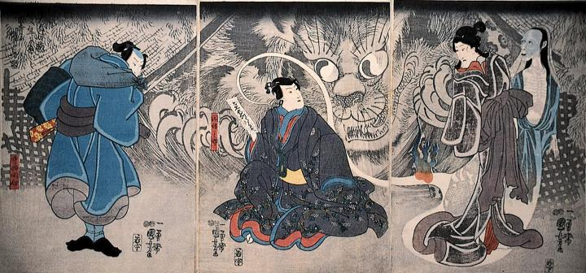

破れ御簾を突き破って因幡之助の前に現れた巨大な怪猫。
著作者：歌川国芳／出典：親書誌：M80_naprstek_0019：昔ばなしの戯 猫又年をへて古寺に怪をなす図；ムカシバナシノギネコマタトシヲヘテフルデラニカイヲナスズ／日付：2011／資源識別子：M80_naprstek_0019_0001_0000
Copyright (c)2010- International Research Center for Japanese Studies, Kyoto, Japan. All rights reserved.